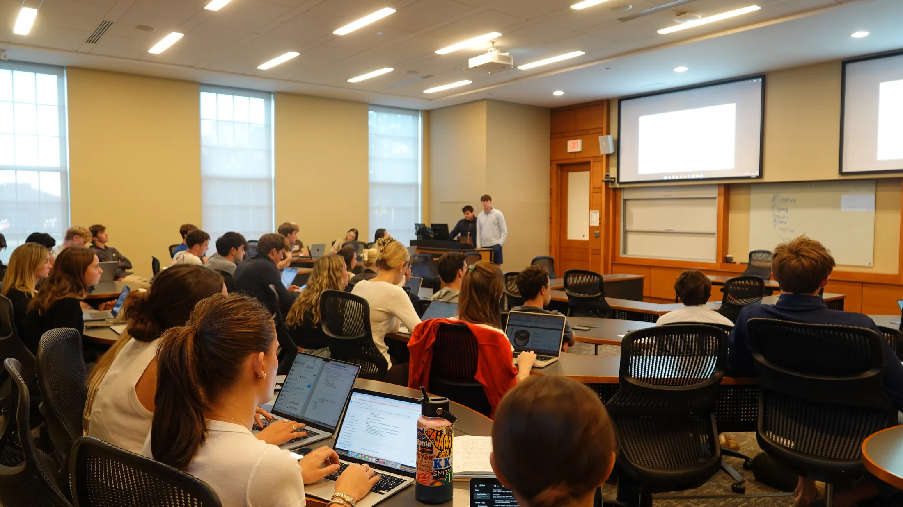
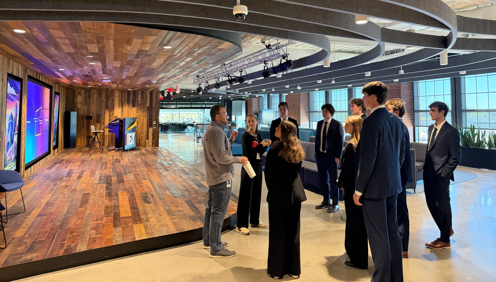
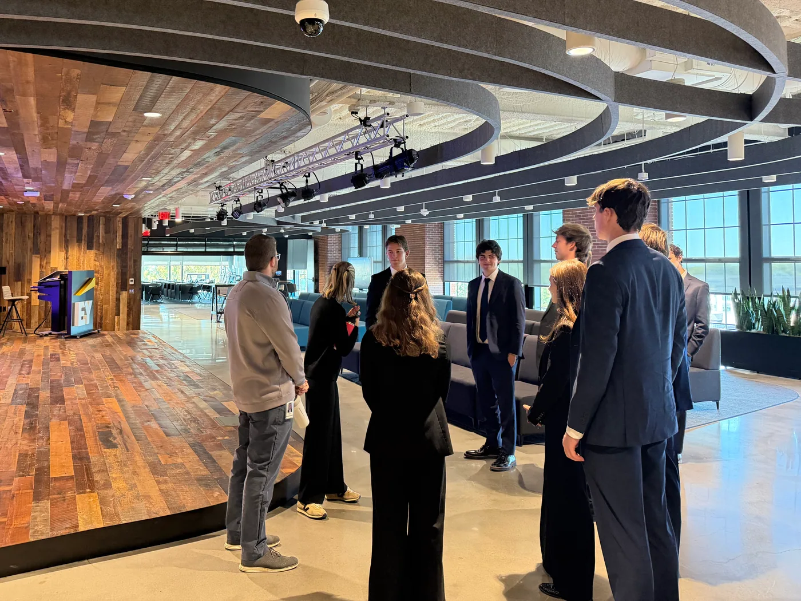
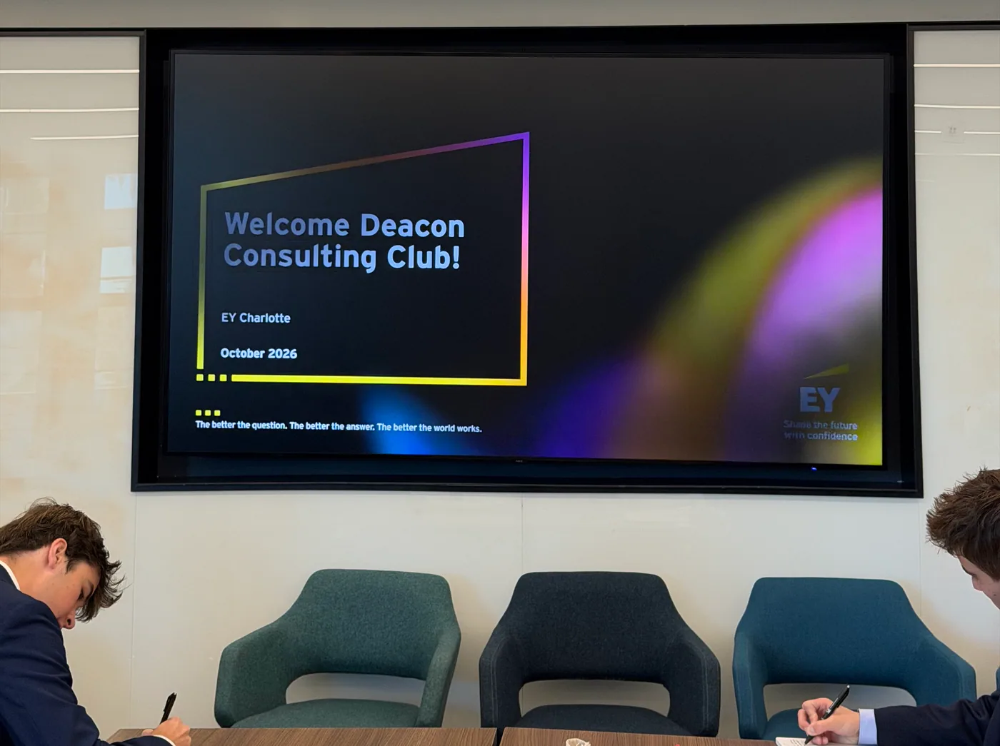
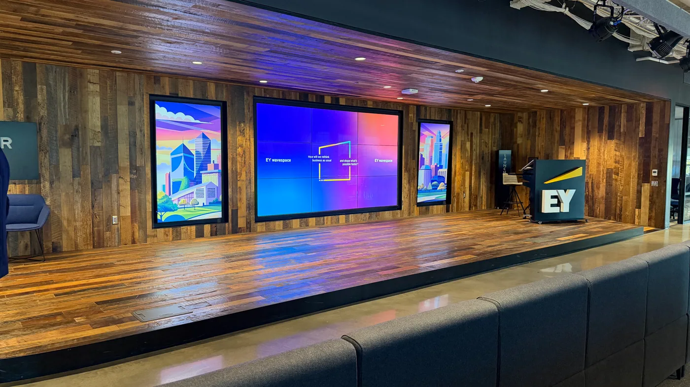
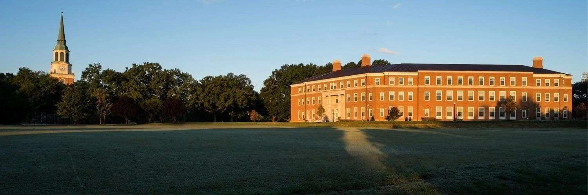

DCC intro meeting
Meet the board and hear the plan for the year.
The club
Every major. Every class year. DCC brings students together to explore consulting, practice with peers, and learn from the Wake Forest community.
Come to a meeting
What to expect
Start wherever you are.
General meetings build from networking and behavioral preparation to live case practice. Along the way, you’ll meet other students exploring the same questions and hear from people working in the industry.
Our activities include case workshops, resume preparation, information sessions, panels, and case competition teams.
Looking for client experience? Explore the Analyst ProgramBeyond campus · October 2026
A closer look at life inside the firm.
DCC members visited EY’s Charlotte office, met with the team, and explored the spaces where they work. A few moments from our visit.





Fall 2026
General meetings
Tuesdays · 5:00 PM
Farrell Hall A27
Follow DCC for meeting updates.
InstagramMeet the board and hear the plan for the year.
Coffee chats and networking, with a Wake alum consulting at Accenture.
Strategic storytelling with the Office of Leadership.
From the case prompt to a final recommendation.
Case workshop: build a framework around the problem.
Case workshop: practice calculations and interpret charts.
Wake alumni discuss recruiting, firm culture, and their experience.
Our teams present their recommendations to close the semester.
Join the club
You can join DCC without applying to the Analyst Program.
Drop in to a general meeting, or email the board to introduce yourself and get connected to the club’s GroupMe. There’s no prior consulting experience required.
wakeforestdcc@gmail.com
Deacon Consulting Club
Alumni help members see what a consulting career can look like. Share your experience through a conversation, case session, or panel.